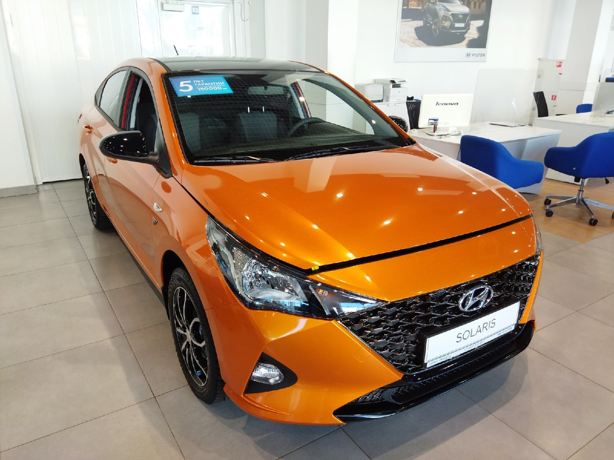
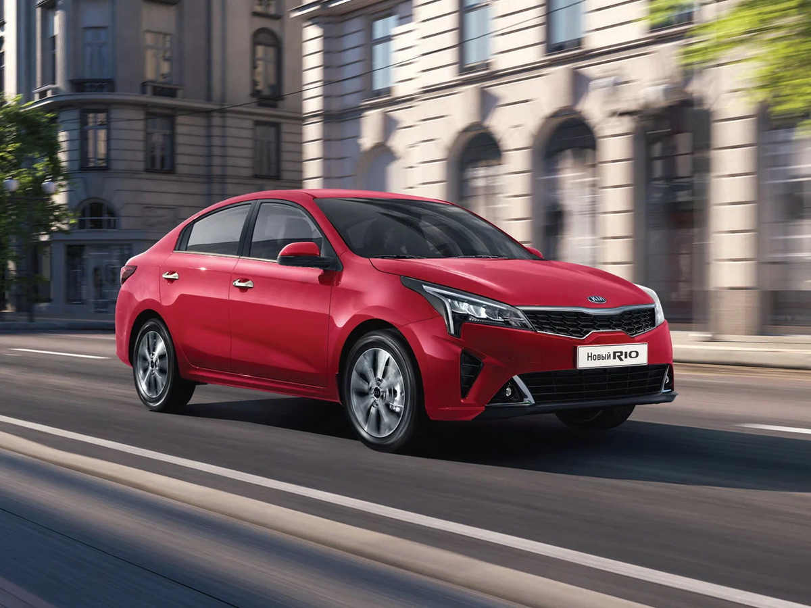
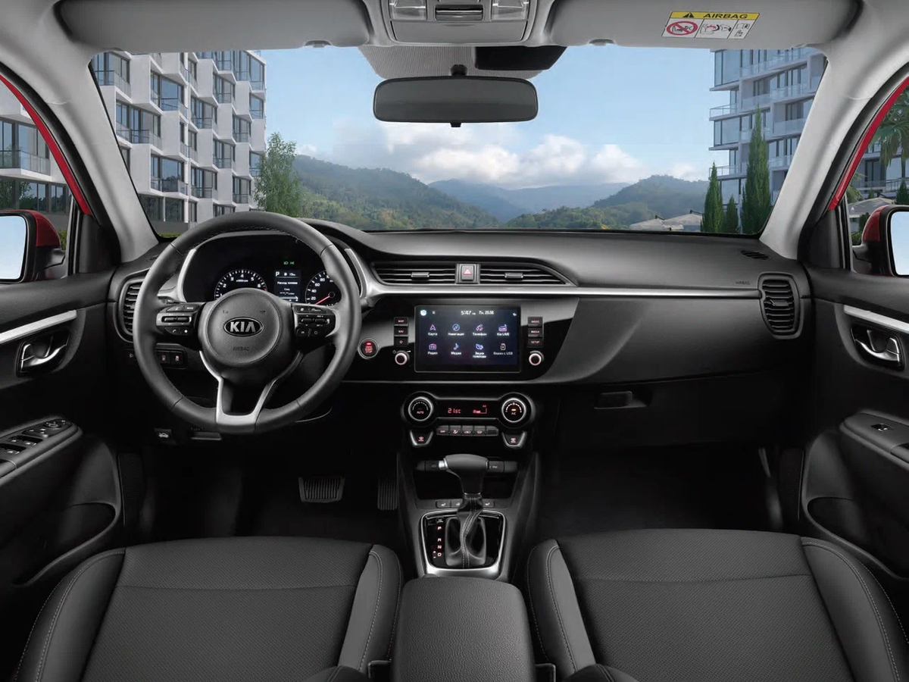

На российский рынок снова вернулись Hyundai Solaris, Hyundai Creta, Kia Rio и Kia Rio X-line
российской сборки.
Правда, продавать их всех будут под маркой Solaris. А что вы хотели? Санкции пока официально не отменили,
поэтому театр одного актёра ещё продолжается.

Разумеется, уже пошли шутки о том, что Hyundai Solaris теперь будет называться Solaris
Solaris. Нет, наверное, это было бы даже забавно, но нет. Сами модели получили другие имена, которые,
кстати, уже известны.
Под какими названиями теперь в России будут продавать корейцев?
Тот самый седан Hyundai Solaris с лёгкой руки российских маркетологов превратился в Solaris
HS.
Один из самых популярных кроссоверов всех времен и народов Hyundai Creta стал Solaris HC.
Седан Kia Rio довольно неожиданно трансформировался в Solaris KRS.
А его собрат — приподнятый хэтчбек Kia Rio X-line теперь будет именоваться Solaris KRX.
Несмотря на максимально короткие названия запомнить всё это мельтешение латинских букв
довольно сложно. Но сходу понятно, что никто над именованием модельного ряда вообще не «парился», как
говорится.
Поставили первые сочетания букв, которые пришли на ум. Видимо нужно было как можно скорее
запускать всё в производство, поэтому думать над каким-то сложным неймингом времени не было.
С другой стороны, а какая разница? Самое главное, что мы получаем ровно тех же самых бюджетных корейцев,
которые были у нас два года назад.Из того же самого металла, с теми же моторами и коробками, с той же
проводкой. Изменился исключительно шильдик и всё на этом.
Неужели это всё правда?
Да, это не слухи. Холдинг AGR Automotive Group официально объявил о выходе на российский
рынок той самой марки Solaris.
Что это за холдинг такой? Именно его связывают с фирмой «Арт-Финанс», которая выкупила завод Hyundai Motor
Manufacturing Rus в городе Сестрорецк. Он входит в Курортный район Санкт-Петербурга

То есть, речь идёт не просто о завозе в Россию готовых машин из Кореи. Как с большинством
китайских иномарок, которые якобы собирают в РФ. А по факту лишь прикручивают колеса.
Нет, все эти «Солярисы», как и раньше, будут собирать на предприятии под Питером по полному
циклу. Со сваркой кузовов, окраской, монтажом двигателя, трансмиссии и других агрегатов.
Это очень хорошо, потому что «Солярисы» сразу получат чуть ли не максимальные баллы по
локализации и не подпадут под повышенный утилизационный сбор. По идее, по крайней мере.

Впрочем, 70 000 машин — это не так уж и мало. Скорее всего, их будут продавать пару лет. С
учётом реалий сегодняшнего российского рынка.
А гарантия будет? Какая и от кого?
Да, новые владельцы завода уже сообщили, что на весь модельный ряд распространяется гарантия
в 3 года или 100 000 километров пробега. Да, не 5 лет, но те самые пять лет сейчас вообще мало кто даёт
Особенно китайцы. А если и дают, то оговорок там хватает. Поэтому вполне себе человеческая
гарантия.
Самый главный вопрос — сколько будут стоить эти «Солярисы»?
Пока совершенно непонятно. По крайней мере, от производителя информации по ценникам нет. На площадках объявлений эти самые «Солярисы» тоже не появлялись.
- Chrome — 65.77%.
- Edge — 12.71%.
- Safari — 8.63%.
- Firefox — 6.61%.
- Opera — 3.15%.
В России Chrome тоже на коне, но «Яндекс Браузер» уже приближается к его показателям.
Бронзовым призёром
стал Edge. Интересно, что Safari не вошёл в пятёрку, став лишь шестым
Топ-5 самых популярных браузеров в России
- Chrome — 44.33%.
- «Яндекс Браузер» — 28.34%..
- Opera — 11.41%.
- Edge — 6.63%.
- Firefox — 5.46%.
А вот на смартфонах ситуация совсем другая. Chrome и в этом случае вне конкуренции (57.13%),
но на втором
месте идёт Safari (22.24%). Судя по всему, пользователи iPhone предпочитают предустановленный браузер.
Третьим стал «Яндекс Браузер» (14.9%), четвёртым — Samsung Internet (2.44%), а пятым — Opera (2.12%).
Если смотреть на мир, то можно увидеть практически идентичную картину (за исключением «Яндекс Браузера»).
На первом месте с большим отрывом Chrome (65.29%). Следом идут Safari (24,26 %), Samsung Internet (4.41%),
Opera (2,2%) и UC Browser (1,44%).